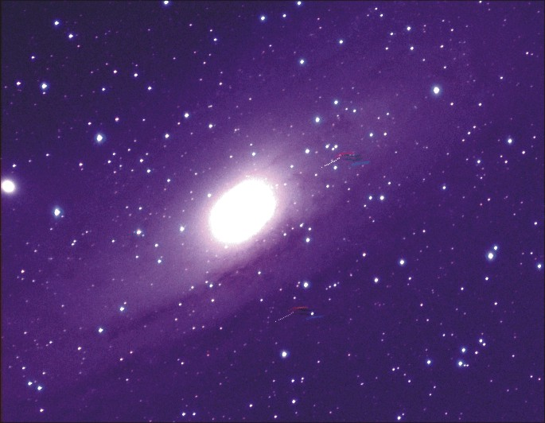
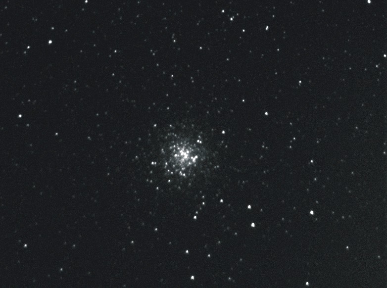
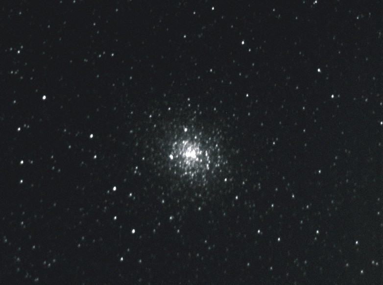

www.Astronovel.github.io
|
|
|
|
www.Astronovel.github.io |
|
|
|
- - - - - - - - - - - - - - - - - - - - - - - - - - - - - - - - - - - - - - - - - - - - - - Telescopio Moon AR 250/1200 f/4.8 Telescopio Bresser AR 102/1000 f/10 Telescopio Meade ETX AR 70/350 f/5 - - - - - - - - - - - - - - - - - - - - - - - Schedar c Estrella doble 17-07-2025
M11 29-07-2025 EXP=25"
M26 29-07-2025 EXP=25"
M57 5-10-2020 EXP= 60seg
M92 5-10-2020 EXP= 90seg
M31 5-10-2020 EXP= 250seg
M81 5-10-2020 EXP= 90seg
- - - - - - - - - - - - - - - - - - - - - - - - - - - - - - - - - - - - - - - - - - - - - - - - - - - - - - - - - - - - - - - - - - - - - - -
M 31  20-08-2009 1h30´ UTC ATIK 16IC + Telescopio = 70 mm F5 Exposición = 630" ----------------------------------------------------------------------------------------------------------------------------------------------------------------------------------------------------- LNB 249
IC 1318
NGC 6888
ALBIREO RGB
LNB 249 IC 1795
IC 5146 M 81
M 2 (17-07-2009)
M 9 (17-07-2009)  M 19 (17-07-2009)  M 102 (17-07-2009)
NGC 6369 (17-07-2009)
Cabeza de caballo
(12-02-2009 18h51' UTC , 250/1200, expo: 1200" )
NGC 2264 Nebulosa del cono
(13-02-2009 21h45' UTC , 250/1200, expo: 1050" )
NGC 2261 (13-02-2009 22h37' UTC , 250/1200, expo: 340" )
M 65
(16-02-2009 00h00' UTC , 250/1200, expo: 330" )
M 66 (16-02-2009 00h50' UTC , 250/1200, expo: 330" )
NGC 3628
(17-02-2009 21h40' UTC , 250/1200, expo: 680" )
M 1 (17-02-2009 18h30' UTC , 250/1200, expo: 400" )
M 42
(15-02-2009 20h17' UTC , 250/1200, expo: 360" )
M 97 (24-02-2009)
M 82 (24-02-2009)
M98 (16-5-2009)
Pluton (16-05-2009 0h32' UTC, expo: 40" )
M101 (27-05-2009 0h26' UTC , 70/350, expo: 430" )
M29
M39
------------------------------------------------------------------------------------------------------------- Fotos con web cam 2001
Ocultación de Saturno por la Luna. Jupiter Luna Saturno
|
||||||||||||||||||